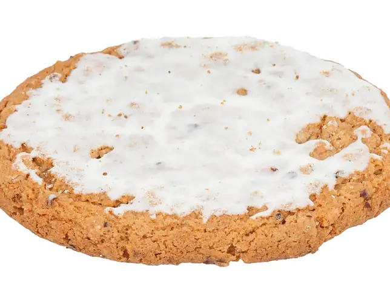

Фото: Evan-Amos, CC BY-SA 3.0

Овсяное печенье
Домашнее овсяное печенье с хрустящим краем и мягкой серединой
40 мин8 порц.284 ккал на порциюБ 5 · Ж 13 · У 37Интернациональная кухня
Продукты на 8 порц.
- Овсяные хлопья2 стак.
- Мука пшеничная6 ст. л.
- Сливочное масло100 г
- Сахар0,5 стак.
- Яйцо куриное1 шт
- Разрыхлитель1 ч. л.
- Соль1 щеп.
- Корица по желанию1 щеп.
- Изюм по желаниюпо вкусу
Как готовить
- Достаньте масло заранее, чтобы оно стало мягким. Разогрейте духовку до 180 °C (средний жар).
- Разотрите масло с сахаром ложкой до однородности, добавьте яйцо и перемешайте.
- Смешайте отдельно хлопья, муку, разрыхлитель, соль и корицу.
- Соедините обе смеси, добавьте изюм и замесите липкое тесто. Оставьте на 10 минут, чтобы хлопья набухли.
- Застелите противень бумагой. Выкладывайте тесто по 1 ст. л. на расстоянии 4 см и слегка приплюсните.
- Выпекайте 12-15 минут, пока края не станут золотистыми. Середина может казаться мягкой, при остывании она схватится.
- Остудите на противне 5 минут, затем переложите на решётку.
Совет. Не передерживайте печенье в духовке: остывая, оно твердеет. В закрытой банке хранится до недели.